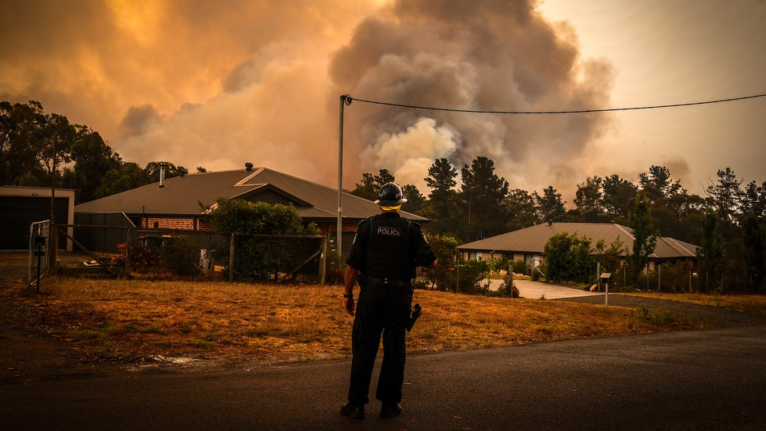
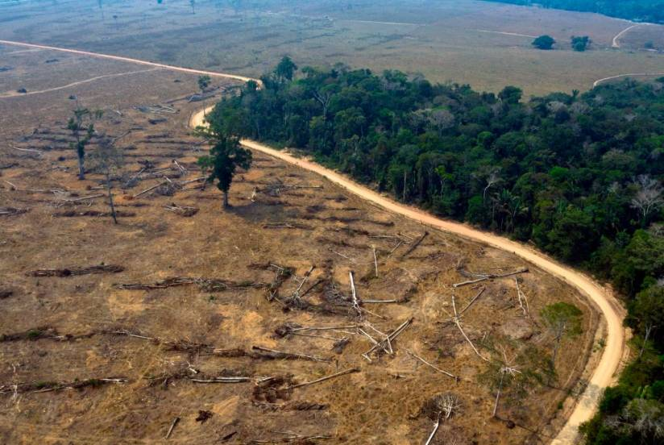
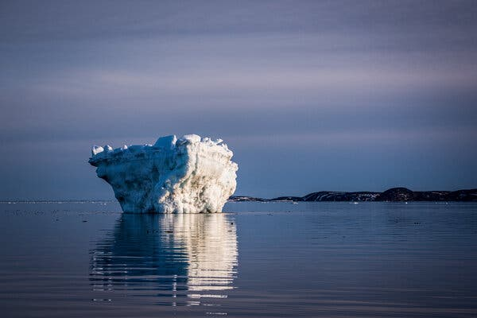

"What have been done so far

In November 2011, Australian lawmakers approved an ambitious carbon trading plan — the world's largest outside of Europe. Under the plan, Australia's 500 worst polluters would be forced to pay a tax on every ton of carbon they emit starting in July 2012. By 2015, the nation plans to move to a full-on, market-based carbon trading system. Australia says it plans to link its carbon market to one set up in neighboring New Zealand. That might make it harder to dismantle the market if conservatives win back control of Australia's government in 2013.

Brazil's National Climate Change Plan is focused on expanding renewable electric energy sources and beefing up the use of biofuels in the transportation industry. The country is also focusing heavily on reducing deforestation rates: It's hoping to eliminate illegal deforestation and bring the net loss of forest coverage to zero by 2015.
But a proposal to loosen Brazil's deforestation rules is currently making its way through the legislature. If enacted, critics say the changes could create more opportunities for logging.

Canada did little to try to meet its obligations under the Kyoto Protocol. Indeed, today, the country's emissions are 17 percent above 1990 levels — in large part because of emissions tied to the dirty business of extracting oil from Alberta's tar sands.
According to a Canadian government report released in mid-2011, emissions from tar sands will more than cancel out the progress that Canada has made in shifting its electricity generation from coal to natural gas. By 2020, the report projects that Canada will fall well short of its stated emission-reduction targets.